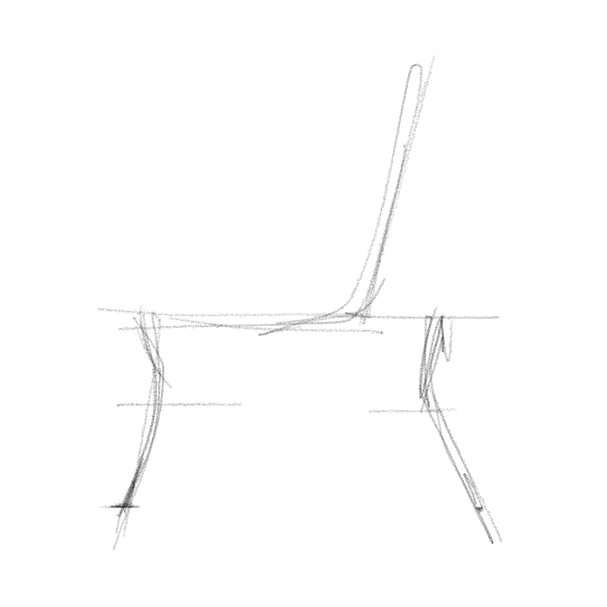
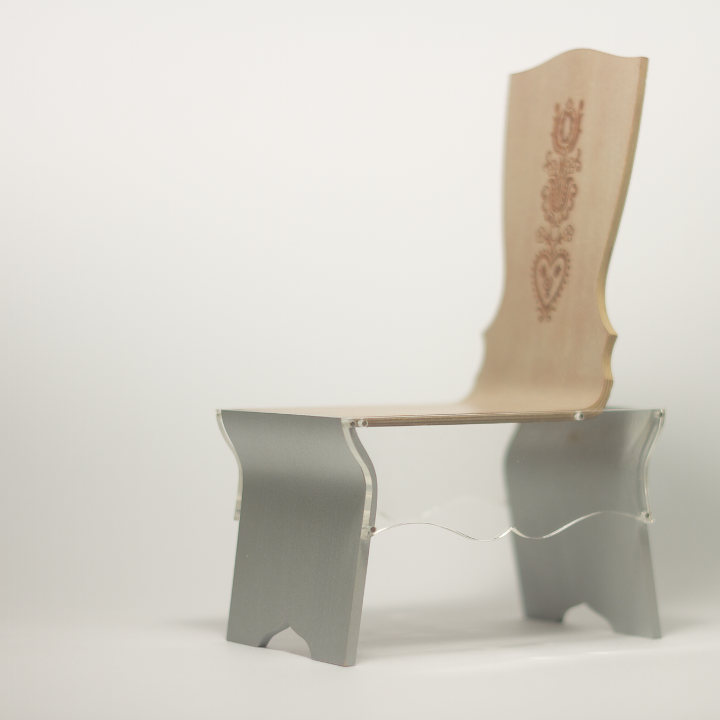
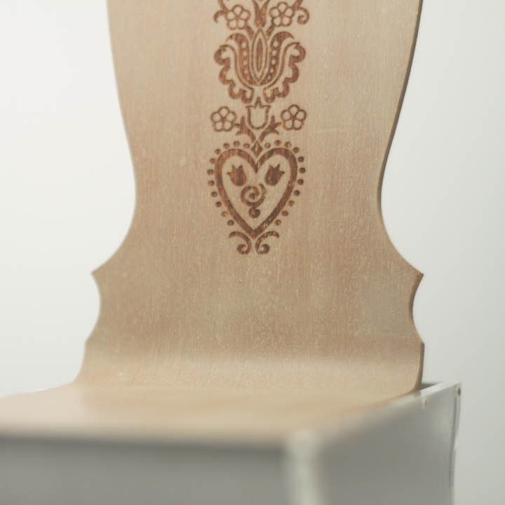

Based on traditional hungarian peasant furnitures, this seat is designed for Fütyülös
This 1/5th scale model is made of steam-bent plywood, brushed aluminium and acrylic sheets.

The folklore based logo of Fütyülös was the perfect inspiration: design the bench around the artwork, as our ancestors did.
© 2008 – 2017 peter varo